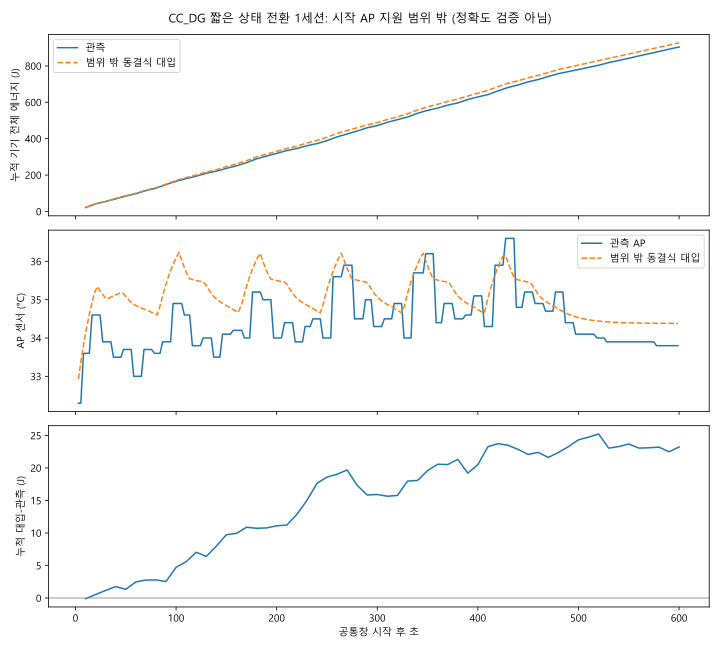

동결 모형의 지원 범위 밖: 시작 AP 32.3°C는 개발 관측 범위 32.5-39.5°C의 아래입니다. 점선은 동결식을 수치 대입한 탐색 외삽이며 예측 정확도 검증이 아닙니다. 새 APK/프로토콜 진단이고 임의 도착·정책 절감 실측이 아닙니다.
공통창 600.094초 관측 903.842J, 상태 매핑 600.056초 관측 903.793J 대 외삽 927.073J. 매핑되지 않은 0.038초는 0으로 채우지 않았습니다. 작업 1039회, 실제 병행 lane 공동 점유 총 78.565초, AP 최고 관측 36.6°C.
판정과 출처 JSON · 36개 블록 CSV · 상태별 잔차 CSV · 에너지 경로 CSV · AP 경로 CSV · 재현 안내

| 실행 상태 | 블록 수 | 초 | 관측 J | 외삽 J | 차이 J |
|---|---|---|---|---|---|
| classification_CPU | 6 | 90.038 | 149.866 | 156.794 | +6.928 |
| classification_CPU+detection_GPU | 6 | 123.239 | 250.492 | 260.086 | +9.595 |
| detection_GPU | 6 | 93.573 | 153.077 | 150.889 | -2.188 |
| resident_idle | 19 | 293.206 | 350.359 | 359.304 | +8.945 |
J는 A24 전류 raw=mA 해석에 따른 기기 전체 조건부 값이며 절대 정확도는 미인증입니다. AP는 AP 센서(mType=0)로 BAT/표면 온도나 안전 한도가 아닙니다. 센서/요청 표본은 독립 세션 수가 아닙니다. 기존 합성 도착 시뮬레이터의 전력·열 값은 별도 가정이며 이 진단으로 엄격 지원을 확장하지 않았습니다.